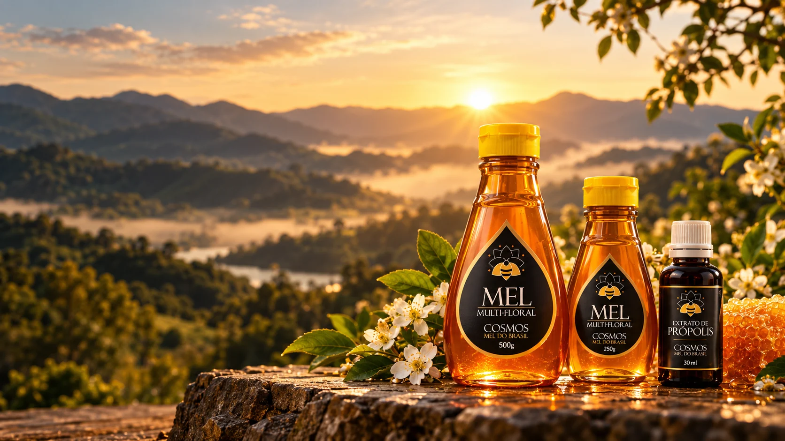

Naturalmente brasileiro
Mel puro das montanhas de Lambari para a sua mesa.
Produzido com respeito às abelhas, cuidado artesanal e a riqueza das floradas do Sul de Minas Gerais.
Florada silvestreperfil natural de cada lote
Produção artesanalcuidado em cada etapa
Sul de MinasApiário Lambari
Manifesto Cosmos
Natureza, ciência e origem.
Existe um universo inteiro dentro de uma gota de mel.
Linha Cosmos
Conheça nossos produtos.
Cada produto terá sua própria página, com origem, características, curiosidades e canais oficiais de compra.
O universo dentro de um pote
Quanto trabalho existe no seu mel?
Escolha uma quantidade e transforme o peso do mel em uma escala que dá para imaginar: vidas de operárias equivalentes, visitas a flores, quilômetros de voo e voltas ao redor da Terra.
Abrir especial interativo →Calculadora educativa
500 gEstimativas educativas baseadas em médias publicadas por extensões universitárias. A produção real varia conforme florada, clima, colônia e disponibilidade de néctar. Ver fontes.


Sobre a Cosmos
Cuidar das abelhas é cuidar de todo o sistema.
A Cosmos conecta produto, origem e cultura apícola. O manejo no apiário, o cuidado com as colmeias e a leitura da paisagem fazem parte da história por trás de cada lote.
01
Respeito às abelhas
Uma relação de cuidado com o ambiente e o ciclo natural das colmeias.
02
Produção artesanal
Processos acompanhados de perto, com atenção à origem e apresentação.
03
Identidade brasileira
Produtos ligados ao Sul de Minas e às floradas da região.
Nossa origem
Lambari. Sul de Minas.
É entre as montanhas de Lambari, no Sul de Minas Gerais, que nasce o mel Cosmos. Cercadas por mata, diferentes floradas e mudanças de estação, as colmeias traduzem o território em aroma, cor e sabor. Cada lote carrega um pouco da paisagem de onde veio.
Fale com a gente
Da Mantiqueira para a sua mesa.
Dúvidas, kits, revenda ou disponibilidade? Fale diretamente com a Cosmos.